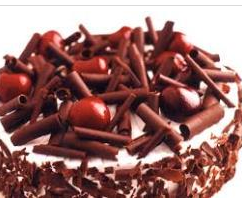

Gulab Jamun Cheesecake
Recipe By Rabia Aslam

Ingredients
-
Mini gulab jamun 25
-
Fresh whipped cream 250g
-
Powdered sugar 75g
-
Biscuits 10-15
-
Rose water 2 tbsp
-
Agar agar-soaked in water 3 tbsp
-
Cream cheese ½ cup
-
Vanilla essence 1 tsp
-
Sugar 1 ½ tbsp
-
Cardamom powder ½ tsp
-
Chocolate for garnish
Cooking Directions
-
In a pan cook agar agar with rose water.
-
Take a bowl and mix whipped cream and powder sugar.
-
In a bowl mix cream cheese to make it smooth.
-
Add agar agar mixture in cream cheese and mix then fold in whipped cream.
-
Pour half mixture in a greased mould, spread a layer of gulab jamun then pour remaining mixture.
-
Level the top surface and place in the refrigerator for 3 hours.
-
Garnish with chocolate curls and gulab jamun and serve.